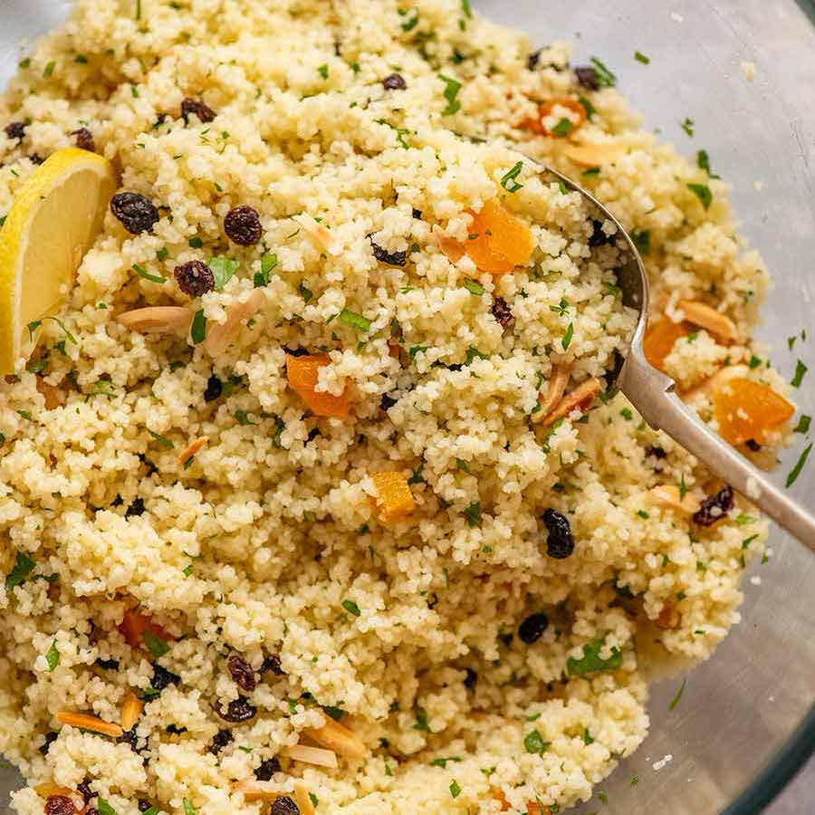

Couscous

Description
This is a delicious, healthy and dense-calorie recipe for couscous.
Couscous is a super healthy choice for food, due to its high nutritional value.
Ingredients
- 225 g of couscous
- 400 ml of water
- 1 can of sardines
- 1 can of mussels
- 3 eggs
- 150 g of lentils
- 50 g of olives
- 100 g of cherry tomatoes
- Plenty of herbs you like (salt, pepper, curry, oregano, paprika etc.)
Steps to follow
- Add the 250 g of couscous in a bowl and add the spices you like
- Boil the 400 ml of water
- Add the water on top of the couscous and cover it with a lid. Let it rest for the next 5-10 minutes
- Prepare to fry the eggs (as you'd normally fry the eggs)
- Take a plate and put on it the lentils, olives and mussels
- By now the eggs should be fried, so add them on the plate as well
- Take the lid off of the oatmeal bowl and stir it a bit
- Take the can of sardines, add it on top of the oatmeal (with the oil included) and then stir it all together
At this point you can enjoy your healthy ~1500 kcal meal!